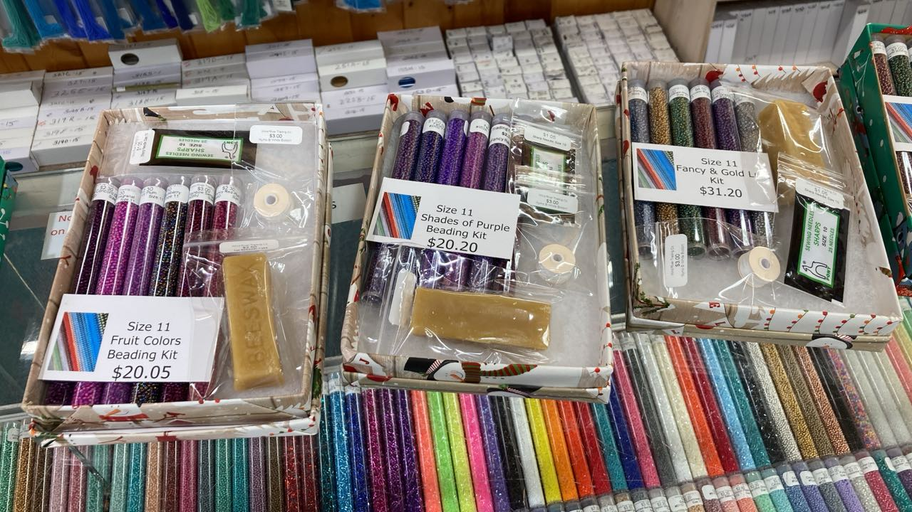
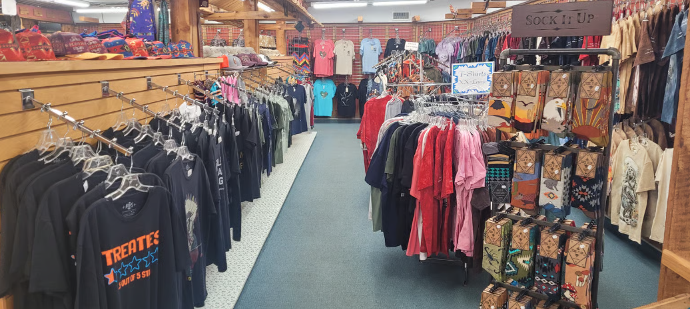
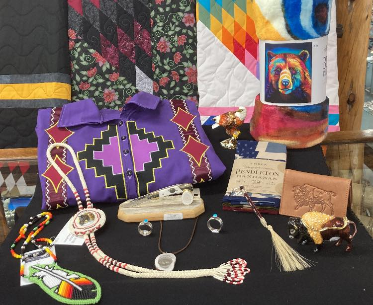

Display Cases
Locally made beadwork and jewelry
Finished beadwork, jewelry, and handmade pieces give the store its one-off feel. They are distinct from the supplies and kits on the making side.

Collections
The store floor moves between Pendleton, locally made beadwork and jewelry, fabric by the yard, gifts, and beading supplies. Some visitors are shopping for a blanket or gift. Others are here because they need materials.

Shop The Trading Post Side
That distinction matters here: finished beadwork and jewelry in the cases, materials on the shelves, apparel and gifts throughout the rest of the floor.
Display Cases
Finished beadwork, jewelry, and handmade pieces give the store its one-off feel. They are distinct from the supplies and kits on the making side.


Pendleton And Textiles
Pendleton has long been part of the store, and it remains Wyoming's oldest Pendleton dealer. Fabric by the yard keeps the textile side practical, not just decorative.

Everyday Carry
Apparel and carry goods round out the store for people buying for themselves, for family, or for the drive home.

Gifts And Wrap
Gift items sit alongside locally made work and one-of-a-kind pieces, so the browsing side of the store still feels tied to place.
Who It Serves
That range is part of the point: locals buying supplies, visitors looking for Pendleton, people shopping for gifts, and anyone hoping to find finished work with more individuality.

Beyond The Store Floor
Artwork, rugs, drums, pottery, pipes, and artifacts are part of the same building, but that room is not just an extension of the sales floor.
Before You Come
There is no live online catalog, and current stock changes. Call the store or check Facebook if you are coming for something in particular.